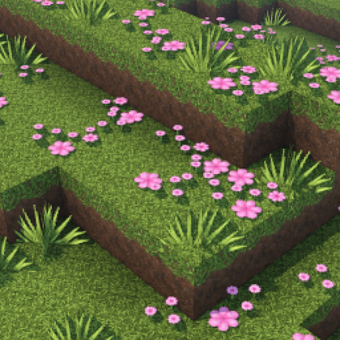
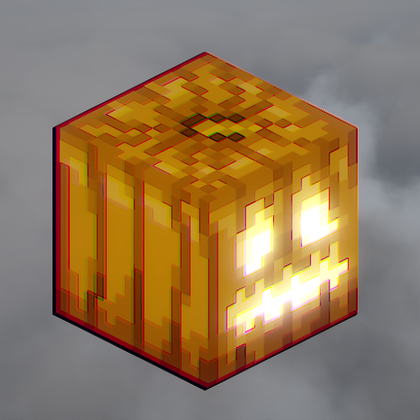
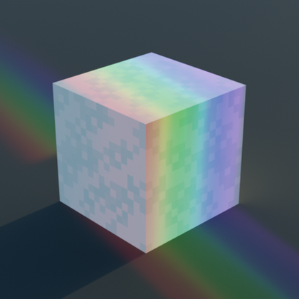

Shadery do Minecrafta
Monophonic [1.20.2] [1.19.4]
Opis
Prosty i lekki pakiet cieniujący, którego celem jest dodanie efektów wizualnych przy minimalnym wpływie na wydajność. Zawiera podstawowe funkcje, takie jak dynamiczne cienie, ewoluujące liście, regulacje nasycenia, kontrastu i ostrości, niestandardowa mgła oraz obsługa dostosowywania normalnych wody za pomocą pakietów zasobów. Ten zestaw shaderów nie działa z Optifine
Spooklementary [1.20.2] [1.19.4] [1.16.5] [1.12.2]]
Opis
Spooklementary to zmodyfikowana wersja popularnego modułu cieniującego Complementary, stworzona z motywem Halloween. Atmosfera wokół stanie się ponura i niesamowita, tony zostaną wyciszone, a nawet w ciągu dnia horyzont pokryje ciemna zasłona mgły.
Pixel Perfect [1.20.4] [1.19.4]
Opis
Pixel Perfect to pakiet shaderów, którego celem jest ulepszenie elementu wizualnego gry bez wprowadzania zasadniczych zmian w stylu Minecrafta. Umożliwi to wybór spośród trzech różnych ustawień wstępnych, które na różne sposoby wpływają na styl waniliowy. Dodatkowo moduł cieniujący zawiera dynamiczny system wiatru, który zamiast wiać losowo, będzie wpływał na liście osobnymi podmuchami.